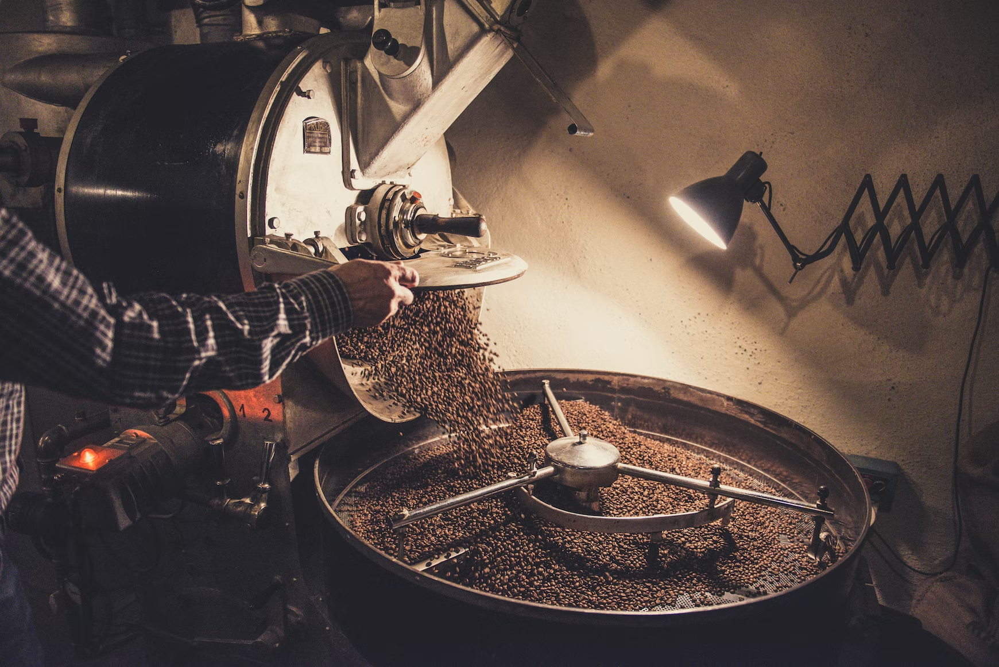
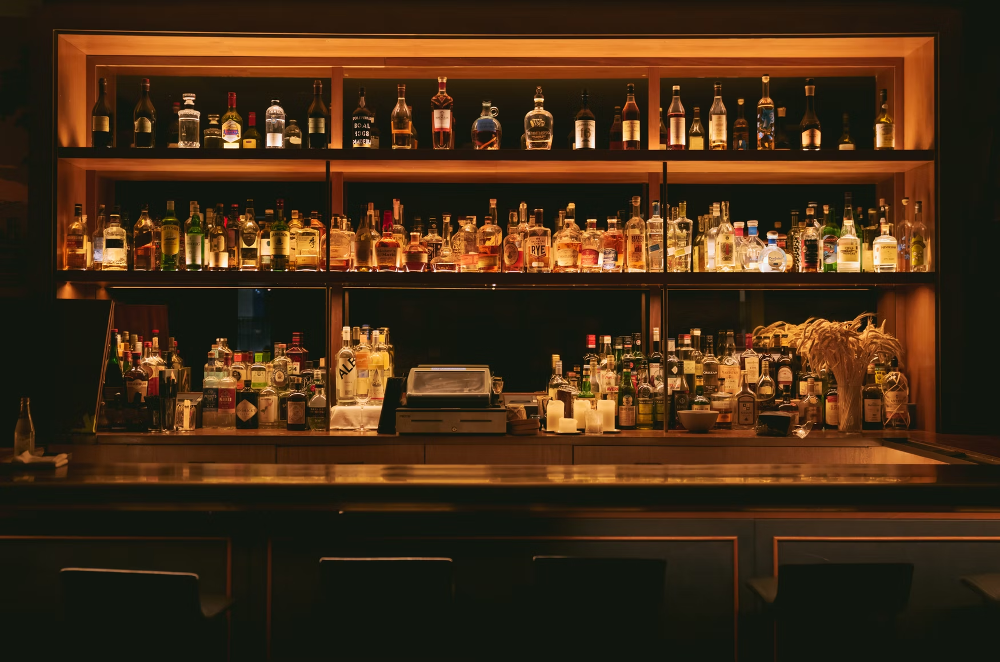

Tea

Coffee

STEWARD is a beverage journal that keeps track of likes, dislikes, tasting notes, and all the subtle nuances and details about the drink as the user would like to document. This is an app with the purpose of journaling about your beverage experience, refining one’s pallet, and encouraging you to explore the liquid world around them.
Our onboarding questionnaire is unique in that it engages the user as to what they are sipping on throughout the day. You’ll be asked a series of questions: Do you drink Alcoholic beverages? Caffeine? Sugar content? The user can choose how much info they disclose for a more general or nuanced experience.
The user then has a series of frames with prompts to fill in about a beverage, some of these options being terroir, maker, age, tasting notes; with the ability to eventually check into a specific location, share their experience on social media, and collect their beverages into yum/meh/yuck piles
Our cause here is for personal education and self reflection. So many times, we breeze through our day without really deeply tasting and connecting with the vital task of putting something in our mouths.
Using our senses, particularly the sense of smell and taste, can be a form of focused meditation. Practices like these have been proven to keep maintain the brain’s plasticity well into old age. “The more senses one uses in learning something, the more of our brain that will be involved in retaining the memory.”* Physicians are also recommending patients recovering from loss of taste/smell from Covid-19 infection to keep a journal of their experiences**.
A beverage journal that engages the user’s 5 senses will be a valuable tool and personal record keeping for self and others to benefit from for years to come.
* Harvard Health articleWhile on the home page, start your journal entry for a drink you'd like to make a record of. You can even add other drinks as you see fit.
Once you've identified the drink you will be journaling, you can learn more about it and start entering your tasting notes.
If the drink you are recording is a tea, you can use the aroma wheel to select words that best describe your experience.